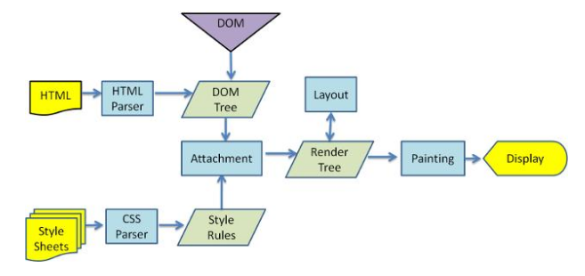

重排重绘
DOM树和渲染树
浏览器下载完页面中的所有组件——HTML标记、JavaScript、CSS、图片之后会解析生成两个内部数据结构——DOM树和渲染树。
- 解析HTML(HTML Parser)
- 构建DOM树(DOM Tree)
- 渲染树构建(Render Tree)
- 绘制渲染树(Painting)

重排
当DOM的变化影响了元素的几何属性（宽或高,字体大小，位置，display:none），浏览器需要重新计算元素的几何属性，同样其他元素的几何属性和位置也会因此受到影响。浏览器会使渲染树中受到影响的部分失效，并重新构造渲染树。这个过程称为重排
重绘
当元素改变的时候，将不会影响元素在页面当中的位置, 完成重排后，浏览器会重新绘制受影响的部分到屏幕，该过程称为重绘。
文档第一次构建必然完成一次重排和重绘
常见触发重排
- 增加、删除、修改(改变DOM几何属性) DOM
- 元素位置改变
- 元素尺寸改变
- 元素内容改变
- 页面渲染初始化
- 浏览器窗口尺寸改变
- font-size
- 计算offsetWidth和offsetHeight
| 常见的重排元素 | 常见的重排元素 | 常见的重排元素 | 常见的重排元素 |
|---|---|---|---|
| width | height | padding | margin |
| display | border-width | border | top |
| position | font-size | float | text-align |
| overflow-y | font-weight | overflow | left |
font-family |line-height |vertical-align |right clear |white-space |bottom |min-height
| 常见的重绘元素 | 常见的重绘元素 | 常见的重绘元素 | 常见的重绘元素 |
|---|---|---|---|
| color | border-style | visibility | background |
| text-decoration | background-image | background-position | background-repeat |
| outline-color | outline | outline-style | border-radius |
| outline-width | box-shadow | background-size |
注：display:none 会触发 reflow，而 visibility:hidden 只会触发 repaint，
优化
减少重排能够节省浏览器对其子元素及父类元素的重新渲染；避免过分的重绘也能节省浏览器性能
- 将多次改变样式属性的操作合并成一次操作
- 将需要多次重排的元素，position属性设为absolute或fixed， 这样此元素就脱离了文档流，它的变化不会影响到其他元素。例如有动画效果的元素就最好设置为绝对定位。
- 由于display属性为none的元素不在渲染树中，对隐藏的元素操作不会引发其他元素的重排。(如果要对一个元素进行复杂的操作时，可以先隐藏它，操作完成后再显示。这样只在隐藏和显示时触发2次重排。)
- 不要使用 table 布局，可能很小的一个小改动会造成整个 table 的重新布局
- 尽可能限制reflow的影响范围，尽可能在低层级的DOM节点上，上述例子中，如果你要改变p的样式，class就不要加在div上，通过父元素去影响子元素不好。
- 避免设置大量的style属性，因为通过设置style属性改变结点样式的话，每一次设置
- 触发一次reflow，所以最好是使用class属性 实现元素的动画，它的position属性，最好是设为absoulte或fixed，这样不会影响其他元素的布局
- 动画实现的速度的选择。比如实现一个动画，以1个像素为单位移动这样最平滑，但是reflow就会过于频繁，大量消耗CPU资源，如果以3个像素为单位移动则会好很多。
- 不要使用table布局，因为table中某个元素旦触发了reflow，那么整个table的元素都会触发reflow。那么在不得已使用table的场合，可以设置table-layout:auto;或者是table-layout:fixed这样可以让table一行一行的渲染，这种做法也是为了限制reflow的影响范围
- 如果CSS里面有计算表达式，每次都会重新计算一遍，出发一次reflow